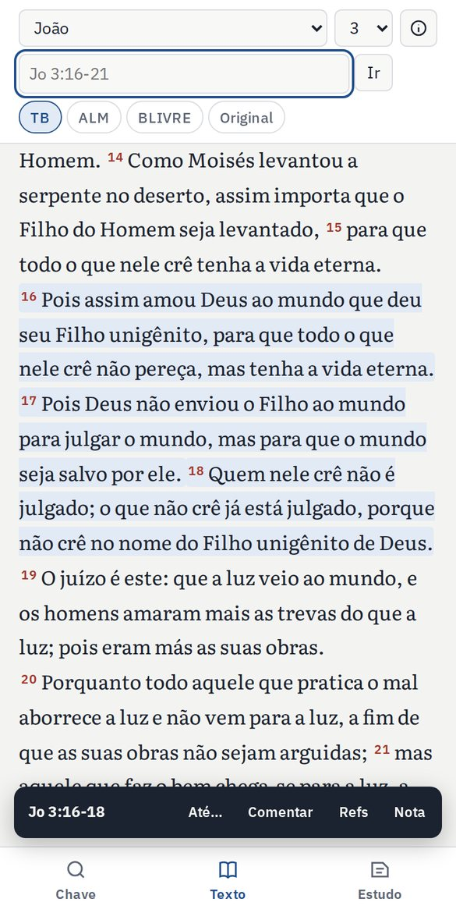
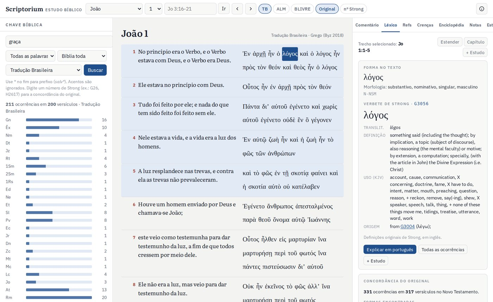
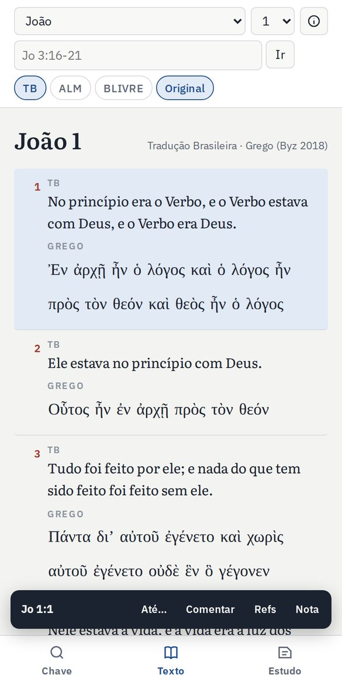
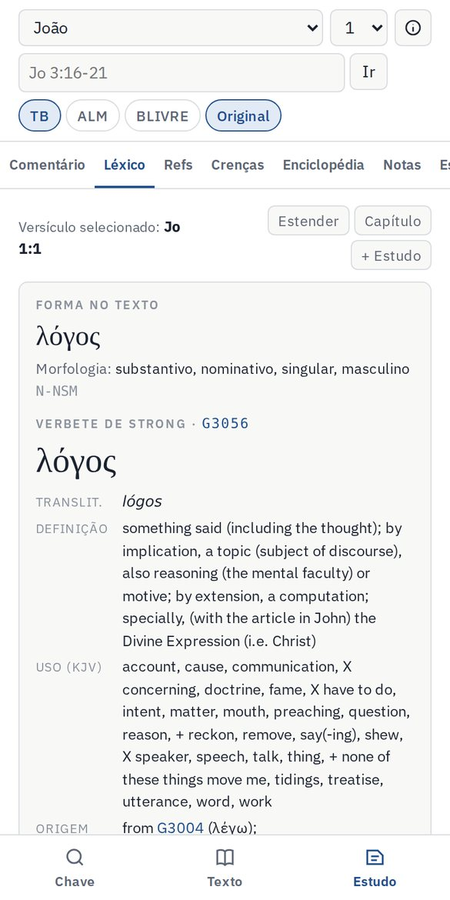
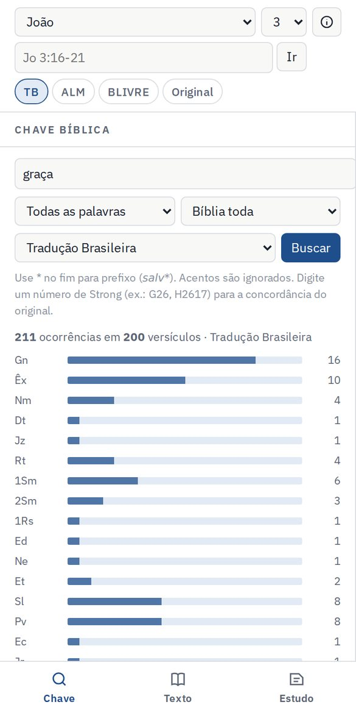
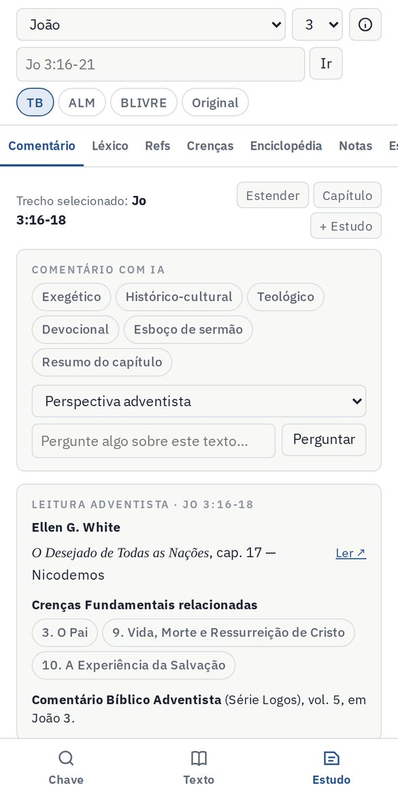
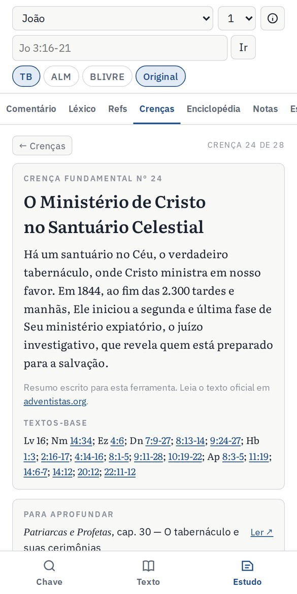
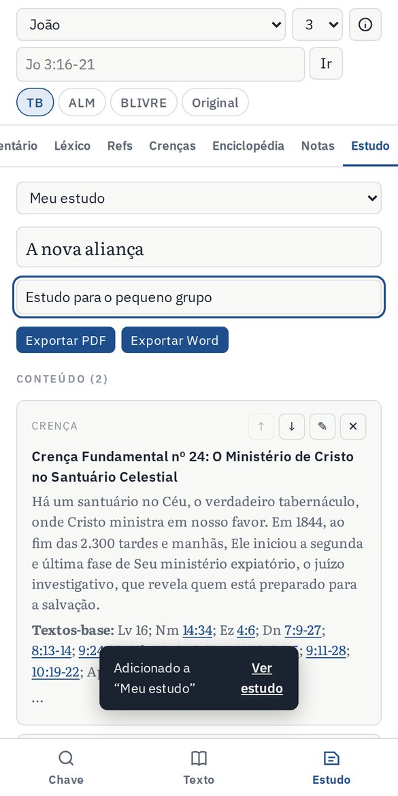

Guia completo para ler, pesquisar, comentar e montar estudos bíblicos no celular e no computador: do primeiro toque ao estudo exportado em PDF ou Word.
3versões em português
2línguas originais
28crenças fundamentais
355capítulos de Ellen G. White
01
Conhecendo a tela
O app se organiza em três áreas: a busca, o texto bíblico e o painel de estudo.
No celular
A barra inferior alterna entre as três áreas:
Botão
O que mostra
Chave
A busca por palavras, frases e números de Strong.
Texto
A Bíblia aberta no livro e capítulo escolhidos.
Estudo
As abas Comentário, Léxico, Refs, Crenças, Enciclopédia, Notas e Estudo.
No topo ficam o livro, o capítulo, a caixa de referência, as versões e o ícone ⓘ de configurações.
No computador
As três áreas aparecem lado a lado: a busca à esquerda, o texto no centro e o painel de estudo à direita.

Texto no celular, com Jo 3:16-18 selecionado e a barra de ações embaixo.

No computador: busca à esquerda, texto com o grego ao centro e o léxico da palavra λόγος à direita.
02
Navegar pela Bíblia
Há três formas de chegar a um texto. Use a que for mais rápida no momento.
1. Pelos seletores
Escolha o livro e o capítulo nas duas caixas do topo.
2. Digitando a referência
Escreva na caixa do topo e toque em Ir. O app entende abreviações e nomes completos, com ou sem acento:
Você digita
O app abre
Jo 3:16
João 3, com o versículo 16 selecionado
Jo 3:16-21
João 3, com o trecho 16 a 21 selecionado
Sl 23
Salmo 23 inteiro
1co 13
1 Coríntios 13
apocalipse 14.6
Apocalipse 14:6
Jó 19:25
Jó 19:25 (com acento é Jó; sem acento, jo abre João)
3. Tocando em uma referência
Toda referência sublinhada no app (na enciclopédia, nas crenças, nos comentários e nas introduções) é um atalho: toque e o texto abre.
Para mudar de capítulo, use as setas ‹› no topo ou os botões ← Anterior e Próximo → no fim do capítulo.
03
Selecionar versículos e trechos
Tudo o que o painel de estudo mostra (comentário, referências, leituras e notas) se refere à seleção atual. Ela pode ser um versículo, um trecho ou o capítulo inteiro.
Para selecionar
No celular
No computador
Um versículo
Toque no versículo
Clique no versículo
Um trecho
Toque no primeiro, depois em Até… e no último
Clique no primeiro e dê Shift+clique no último, ou use Estender
O capítulo
Botão Capítulo no painel de estudo
Pela referência
Digite o intervalo, por exemplo Mt 5:1-12
Os versículos selecionados ficam com fundo azul-claro. No celular, a barra escura mostra a seleção e atalhos para Comentar, Refs e Nota.
DicaTrechos dão análises melhores. Para uma parábola, um discurso ou uma narrativa, selecione a passagem inteira antes de pedir o comentário.
04
Versões e texto original
Os botões arredondados do topo ligam e desligam cada versão. Com mais de uma ligada, o texto aparece versículo por versículo, lado a lado.
Botão
Versão
TB
Tradução Brasileira
ALM
Almeida 1911
BLIVRE
Bíblia Livre
Original
Hebraico (Antigo Testamento, Códice de Leningrado) ou grego (Novo Testamento, Texto Bizantino)
nº Strong
Mostra o número de Strong embaixo de cada palavra original (no computador)
A primeira versão ligada é a principal: ela é usada na busca, nas referências e nos textos enviados ao estudo.
NumeraçãoEm alguns capítulos, a numeração do hebraico difere da portuguesa (títulos dos Salmos, Joel 2–3, Malaquias 3–4). Nos Salmos, o app alinha automaticamente e mostra o título como "tít.".

João 1 com a Tradução Brasileira e o grego.
05
Léxico hebraico e grego
Com o Original ligado, cada palavra hebraica ou grega pode ser tocada. O app abre a aba Léxico com a análise completa.
O que aparece
Forma no texto e morfologia em português: por exemplo, "verbo, aoristo, ativa, indicativo, 3ª pessoa, singular".
Verbete de Strong: palavra no dicionário (lema), transliteração, definição, como a King James traduz e a origem da palavra. As definições originais estão em inglês.
Concordância do original: quantas vezes a palavra ocorre, em quantos versículos, em quais formas e em quais livros.
Botões
Explicar em português
A IA explica o termo, o campo de sentido, os usos principais e o sentido no versículo.
Todas as ocorrências
Lista todos os versículos com a palavra na Chave bíblica.
+ Estudo
Envia o verbete ao seu estudo.
Na linha "Origem", os números como G3004 também são tocáveis e abrem o verbete da palavra de origem.

Verbete de λόγος (G3056) com a morfologia em português.
06
Chave bíblica (busca)
A concordância do app: encontra qualquer palavra, frase ou número de Strong em toda a Bíblia.
Abra Chave (celular) ou use o painel da esquerda (computador).
Digite o termo e escolha o modo, o escopo e a versão.
Toque em Buscar. Toque em um resultado para abrir o texto.
Opção
Como funciona
Todas as palavras
Versículos que têm todas as palavras digitadas, em qualquer ordem.
Frase exata
As palavras juntas, na ordem digitada.
Qualquer palavra
Versículos que têm pelo menos uma das palavras.
Escopo
Bíblia toda, Antigo Testamento, Novo Testamento ou o livro atual.
salv*
O asterisco busca o começo da palavra: salvação, salvar, salvo…
G26 / H2617
Busca pelo número de Strong no texto original: todas as ocorrências de ἀγάπη ou חֶסֶד.
Acentos não importam: graca encontra "graça". O gráfico de barras mostra em quais livros o termo aparece mais. Toque numa barra para filtrar só aquele livro.

Busca por "graça": 211 ocorrências, distribuídas por livro.
07
Comentário e IA
A aba Comentário reúne a introdução ao livro, a leitura adventista e os comentários gerados por inteligência artificial para a seleção atual.
Tipos de comentário
ExegéticoEstrutura, palavras-chave no original e gramática.
Histórico-culturalContexto, costumes, geografia e arqueologia.
TeológicoTemas doutrinários e ligação com o restante da Bíblia.
DevocionalAplicações práticas, pergunta para meditação e oração.
Esboço de sermãoTítulo, introdução, três pontos, ilustração e apelo.
Resumo do capítuloDivisões do capítulo e ideia central de cada parte.
Como usar
Selecione o versículo ou o trecho.
Escolha a perspectiva: adventista, evangélica geral ou acadêmica.
Toque no tipo de comentário. O texto aparece enquanto é escrito, e o botão Parar interrompe.
Para uma dúvida específica, escreva em Pergunte algo sobre este texto.
Depois do comentário, use + Estudo, Copiar ou Salvar na nota.
ImportanteA IA é uma ajuda ao estudo, não uma autoridade. Confira sempre com as Escrituras e as obras de referência. Na perspectiva adventista, ela indica os capítulos de Ellen G. White e as crenças relacionadas, mas foi instruída a não inventar citações.
Introdução ao livro
Mais abaixo na aba ficam o autor, a data, o tema, o texto-chave, o resumo e o esboço de cada um dos 66 livros. Os capítulos do esboço também são atalhos.

Aba Comentário para Jo 3:16-18.
08
Leitura adventista
Um quadro da aba Comentário que mostra, para a seleção atual, as leituras complementares da tradição adventista.
Item
O que traz
Ellen G. White
Capítulos que tratam da passagem em Patriarcas e Profetas, Profetas e Reis, O Desejado de Todas as Nações, Parábolas de Jesus, O Maior Discurso de Cristo, Atos dos Apóstolos e O Grande Conflito. O botão Ler ↗ abre o livro em PDF gratuito do Centro de Pesquisas Ellen G. White.
Crenças relacionadas
Crenças Fundamentais que usam a passagem como texto-base. Toque para abrir.
Comentário Bíblico Adventista
O volume da Série Logos que comenta aquele livro.
Exemplo: em Dn 8:14 aparecem O Grande Conflito, caps. 18 e 23, e a Crença 24, O Ministério de Cristo no Santuário Celestial.
Sobre os livrosOs textos de Nisto Cremos, do Tratado de Teologia Adventista e da Série Logos são protegidos por direitos autorais. O app indica livro e capítulo para você consultar o seu exemplar.
09
Referências cruzadas
A aba Refs lista os textos ligados à seleção, com o texto de cada um, ordenados por relevância.
Para um versículo, aparecem todas as referências registradas para ele.
Para um trecho, o app junta as referências de todos os versículos, sem repetir, até 60.
Toque numa referência para abrir o texto.
+ 12 principais ao estudo leva as mais relevantes, com os textos, para o seu estudo.
10
Crenças Fundamentais
A aba Crenças apresenta as 28 Crenças Fundamentais da Igreja Adventista do Sétimo Dia.
Cada crença traz:
um resumo e o link para o texto oficial em adventistas.org;
os textos-base, todos tocáveis;
Para aprofundar: capítulos de Ellen G. White (com link), o capítulo de Nisto Cremos e o tema no Tratado de Teologia Adventista;
Estudo com IA: um estudo bíblico completo, com fundamento, desenvolvimento, relação com outras crenças, leituras de Ellen White, aplicação e perguntas para discussão;
+ Estudo: envia a crença, com textos e leituras, ao seu estudo.
Uso em classeO Estudo com IA sobre uma crença, somado aos textos-base e exportado em PDF, vira um material pronto para um pequeno grupo ou uma classe bíblica.

Crença 24, com resumo, textos-base e leituras.
11
Enciclopédia
119 verbetes sobre pessoas, lugares, doutrinas, festas, medidas, profecias e textos bíblicos.
Busque pelo nome ou filtre por categoria.
Aprofundar com IA amplia o verbete com dados bíblicos, contexto histórico e significado teológico.
Não encontrou um termo? Digite-o na busca e toque em Gerar verbete com IA.
12
Notas
Anotações pessoais ligadas a um versículo ou a um trecho.
Selecione o texto, abra a aba Notas e escreva. A nota é salva sozinha.
Versículos com nota ganham um ponto verde no texto.
A lista "Todas as anotações" mostra suas notas em ordem bíblica. Toque para abrir.
Comentários da IA podem ir direto para a nota com Salvar na nota.
13
Montar e exportar um estudo
A aba Estudo é o seu caderno. Ali você junta o que encontrou no app, organiza e exporta em PDF ou Word.
O que pode ir para o estudo
Os botões + Estudo ficam em todo o app:
Texto bíblico
Versículo ou trecho, nas versões ligadas
Comentários
Qualquer resposta da IA
Léxico
Verbete da palavra original
Referências
As 12 principais, com os textos
Crenças e enciclopédia
Verbete completo
Notas e texto livre
Suas anotações e parágrafos próprios
Passo a passo
Na aba Estudo, dê um título e, se quiser, um subtítulo (por exemplo, "Classe bíblica · sábado").
Organize os itens com ↑↓, edite com ✎ e remova com ✕.
Acrescente introdução ou conclusão com + Texto livre.
Toque em Exportar PDF ou Exportar Word.
O documento sai com título, data, textos bíblicos destacados, subtítulos e paginação. No celular, o arquivo abre a tela de compartilhar, para enviar pelo WhatsApp ou salvar.
Você pode ter vários estudos. Troque entre eles, ou crie um novo, pelo seletor no topo da aba.
Word ou PDF?O PDF é bom para enviar e imprimir. O Word é bom para continuar editando. No Word, o hebraico e o grego aparecem com perfeição.

Estudo "A nova aliança", com os botões de exportação.
14
Instalar, usar offline e fazer backup
Tudo isso fica no ícone ⓘ, no canto superior direito.
Instalar como aplicativo
Android
Toque em Instalar app no topo, ou no menu ⋮ do Chrome → Instalar app.
iPhone
No Safari, toque em Compartilhar → Adicionar à Tela de Início.
Computador
Ícone de instalar na barra de endereço do Chrome ou do Edge.
Usar sem internet
Em ⓘ, toque em Baixar tudo para uso offline. São cerca de 35 MB, então prefira o Wi-Fi. Depois disso, leitura, original, léxico, busca, referências, crenças, enciclopédia, notas e exportação funcionam sem conexão. Só a IA precisa de internet.
Backup
Suas notas e estudos ficam salvos no próprio aparelho. Use Exportar backup com frequência e sempre antes de trocar de celular. No aparelho novo, use Importar backup.
AtençãoLimpar os dados do navegador ou desinstalar o app apaga notas e estudos que não estiverem num backup.
Código de acesso da IA
Se quem administra o app definiu um código, digite-o em Inteligência artificial e toque em Salvar.
15
Roteiros prontos
Três caminhos para usar os recursos em conjunto.
Preparar a lição da Escola Sabatina
Abra o texto-base da semana digitando o trecho (por exemplo, Rm 3:21-26).
Leia em duas versões, ligando TB e ALM.
Em Refs, leia as referências principais e envie-as ao estudo.
Em Comentário, gere o Histórico-cultural e o Teológico, na perspectiva adventista.
Confira os capítulos de Ellen G. White indicados na Leitura adventista.
Escreva suas conclusões em + Texto livre e exporte em PDF para a classe.
Estudar uma palavra no original
Ligue o Original e toque na palavra, por exemplo ἀγάπη em 1Co 13.
Leia a morfologia e o verbete e toque em Explicar em português.
Toque em Todas as ocorrências e percorra os resultados por livro.
Envie o verbete e a explicação ao estudo.
Montar um sermão
Selecione o trecho inteiro da pregação.
Gere o Exegético para entender o texto e depois o Esboço de sermão.
Use a pergunta livre para buscar ilustrações ou aplicações específicas.
Organize no Estudo e exporte em Word para ajustar com o seu estilo.
16
Perguntas frequentes
Por que não aparecem a Almeida Revista e Atualizada, a NVI ou a Nova Almeida?
Essas versões têm direitos autorais. O app usa três versões livres: Tradução Brasileira, Almeida 1911 e Bíblia Livre.
A IA não responde. O que fazer?
Verifique a internet. Se aparecer a mensagem de código de acesso, digite o código em ⓘ. Se a mensagem disser que a IA não está ativada, o restante do app funciona normalmente.
As definições do léxico estão em inglês. Tem em português?
O dicionário de Strong original é em inglês. O botão Explicar em português traduz e explica cada verbete.
A numeração do hebraico não bate com a do português.
É normal em alguns capítulos. Nos Salmos com título, o app ajusta sozinho. Em Joel e Malaquias, a divisão de capítulos é diferente.
Perdi minhas notas ao trocar de celular.
As notas ficam no aparelho. Use Exportar backup no aparelho antigo e Importar backup no novo.
Posso usar os comentários da IA em pregações?
Sim, como ponto de partida. Revise, confira as referências e dê a sua voz ao texto.
Fontes e créditos
Tradução Brasileira e Almeida 1911 (domínio público) · Bíblia Livre (CC BY) · Hebraico: Westminster Leningrad Codex e Open Scriptures Hebrew Bible (CC BY 4.0) · Grego: Robinson-Pierpont, Texto Bizantino 2018 (domínio público) · Dicionários de Strong, edição Open Scriptures (CC BY-SA) · Referências cruzadas: OpenBible.info (CC BY) · Livros de Ellen G. White: PDFs do Centro de Pesquisas Ellen G. White · Comentário com IA: modelo Claude, da Anthropic.